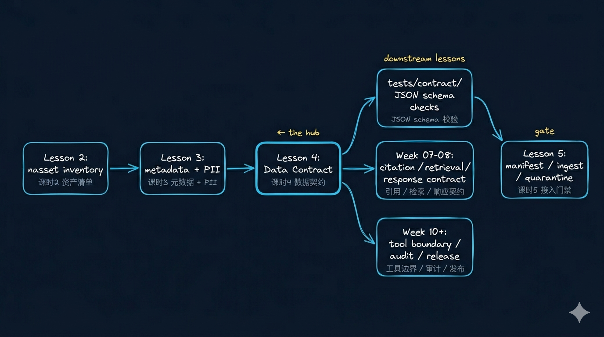
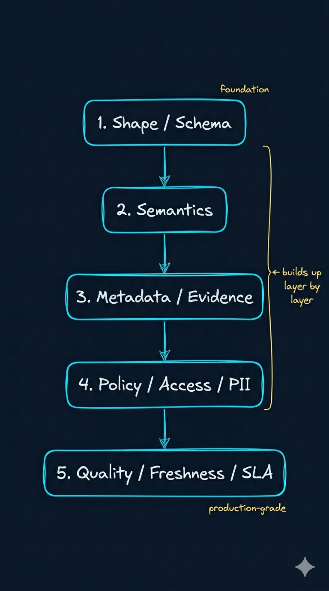
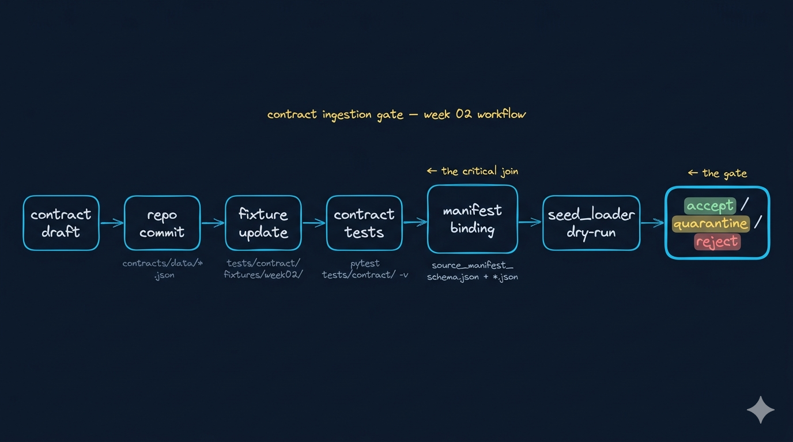

把 Data Contract 做成工程门禁：Schema、语义、质量、兼容性
开场判断：Data Contract 不是字段清单，而是输入系统的 gate
先立一个判断
Week02 的 contract 不是文档资产，而是 Week03 ingest admission 的前置接口。能不能放行、隔离、拒收、报警，都应该从这里开始。
先把 4 句判断立住
Schema 不是 contract 的全部，它只覆盖 shape。
兼容性不是技术细节，而是对下游消费方的承诺。
底层越支持 evolution，上层越需要 admission gate。
课时4 不是讲 JSON 写法，而是在定义 Week03 ingest 前的准入控制面。
这讲在 Week02 的位置：前三课的约束，要在这里第一次变成门禁
Week02 位置图

前两课解决“什么值得接、最低要带什么”；这一讲开始回答“这些约束怎样真正变成系统可执行的门禁”。
先把 4 个对象彻底分开：Schema、Contract、Manifest、Policy 不是一回事
| 对象 | 它主要解决什么 | 最容易被误解成什么 | 这一层要立住什么 |
|---|---|---|---|
| JSON Schema | 字段形状、类型、枚举、格式是否合法 | 已经等于 data contract | 它只回答“像不像” |
| Data Contract | shape + semantics + evidence + policy + quality 是否一起构成准入标准 | 更正式的数据字典 | 它决定放行、隔离、拒收、报警 |
| Manifest | 本次 ingest 接哪一批 source、按什么模式接 | 文件列表 | 它是一次运行的意图声明 |
| Policy | 哪些字段、动作、角色受限制 | 备注或 wiki 说明 | 没进 gate 的 policy 只是愿望 |
这 4 个对象，用 4 句口语化的话讲就够了
看对象长相。
看对象资格。
看本次批次和接入方式。
看动作边界和责任。
为什么 JSON Schema 不等于 Data Contract：先看 demo 思维
- 只要字段不报错就算通过
- 只校验
required / type / enum - 上游字段还在就默认没问题
- 先跑通 ingest，后面再补治理
它默认“结构不坏 = 业务没漂”，这恰恰是 Week02 前几课一直在提醒的静默失败来源。
再看 production 思维：Contract 是 admission gate，不是加强版字段说明
- 结构合法只是最低门槛
- 还要校验语义、来源、PII、quality、owner
- 要定义 additive / conditional / breaking
- 要能进入 test、CI、dry-run、报警
一份真正可执行的 contract，至少要有 5 层：先看结构图
五层 contract 栈

Schema 是基础层，但真正可进入工程链的 contract，至少还要叠上 semantics、evidence、policy 和 quality。
一份真正可执行的 contract，至少要有 5 层：再看它们各自守什么门
| 层 | 它回答什么 | gate 会问什么 |
|---|---|---|
| Shape / Schema | 对象形状是否合法 | 字段和类型有没有破 |
| Semantics | 字段在业务上是什么意思 | 结构没坏，语义是不是已经漂了 |
| Metadata / Evidence | 以后能不能回指、引用、审计 | 证据链还能不能站住 |
| Policy / Access / PII | 谁能碰，碰到哪一步 | 能不能搜、看、入模、传工具 |
| Quality / Freshness / SLA | 现在够不够资格进入系统 | 是放行、隔离还是拒收 |
真实 contract 解剖一：先看 ticket_contract.json 最该盯哪几类字段
ticket_id / tenant_id / product_linestatus / priority / created_at / updated_atsource_id / schema_version / ownerpii_level / quality_gate
真实 contract 解剖一：ticket_contract.json 真正在守什么资格
| 字段 | 它在守什么 | 坏了会影响什么 |
|---|---|---|
ticket_id |
主键稳定与幂等 | 重复写入、重跑难对齐 |
status |
工单业务状态语义 | KPI、路由、tool 判断全漂 |
product_line |
业务域归属 | 错召回、错权限 |
pii_level |
风险等级 | 错误暴露或过度拦截 |
quality_gate |
当前准入资格 | 脏记录混入索引或湖仓 |
status结构没变，但业务语义变了updated_at还在，但从业务时间变成 ETL 入库时间- 新增字段看起来 additive，实际已经影响下游统计或路由
真实 contract 解剖二：先看 doc_asset_contract.json 最该盯什么
asset_type / modalitysource_url / source_fingerprintlicense_tag / access_scope / pii_leveldoc_version / ingest_batch_id / owner
真实 contract 解剖二：doc_asset_contract.json 最危险的，是证据和权限一起失守
| 字段 | 为什么最该保住 | 丢了会怎样 |
|---|---|---|
doc_version |
区分正式版本和草稿版本 | 版本对不齐 |
page_no |
让 citation 可回页 | 回答难以回指 |
section_path |
还原章节级上下文 | 结构定位崩掉 |
bbox |
支撑图文区域证据 | 图表证据链断裂 |
license_tag |
表示分发与再处理边界 | entitlement 失守 |
内容还能搜到，但已经不再可证明、可解释、可负责。
兼容性不是一句“升级到 v2”就够了：先讲类型
| 类型 | 典型特征 | 默认动作 |
|---|---|---|
additive |
新增可选字段，不直接打破旧消费方 | 记录后可继续前进 |
conditional |
结构没坏，但会影响语义、质量或下游逻辑 | review 后决定 |
breaking |
required、枚举、时间语义、locator 含义被破坏 | 默认拦截 |
兼容性不是一句“升级到 v2”就够了：再讲最值得讲透的案例
- 新增
resolution_code：可能 additive，也可能因为报表依赖变成 conditional status增加waiting_vendor：结构像 additive，语义上常常是 conditionalpriority从枚举改成自由文本：典型 breaking
底层越支持 evolution，上层越需要 gate
Iceberg、湖仓和现代格式支持 evolution，并不代表你可以不做 gate；恰恰因为底层能演进，上层才更要明确什么能放、什么必须拦。
evolution 真正带来的，不只是“能新增字段”，而是“必须明确谁负责判断”
可以新增字段、演进 schema、保留版本历史。
谁来批准、谁会受影响、失败时如何回滚。
变化发生时，知道它属于哪一类、该触发什么 gate 动作。
这套 gate 真正怎么进入工程链
contract 进入工程链

contract 不是孤立文件。它要接进 fixtures、tests、manifest binding、seed loader dry-run，最后才进入 accept / quarantine / reject 这类动作决策。
你跑 pytest tests/contract/ -v 时，到底在验证什么
- shape：字段、类型、枚举、pattern 有没有破
- strictness：隐式漂移有没有被
additionalProperties放进来 - sample quality：坏样本能不能真的被挡住
- runtime readiness：contract 能不能进入 manifest-driven ingest
- 一条合法样本
PASS - 一条非法枚举
FAIL - 一条缺失 required
FAIL - 一次兼容性讨论落到 fixture 和 consumer 影响，而不是停在口头
contract tests 的最短演示命令只保留这一条
进入仓库前，只验证 3 件事
contracts/data/ticket_contract.json和contracts/data/doc_asset_contract.json到底守了什么tests/contract/fixtures/里的样例怎样让 gate 真实失败一次pytest tests/contract/ -v的 pass / fail 到底代表什么工程含义
本地先打开这些文件，再决定跑哪条命令
把本地动作翻译回门禁方法
| 本地动作 | 方法论含义 |
|---|---|
打开 ticket_contract.json |
先看结构、语义、policy、quality 是如何叠在一起的 |
打开 doc_asset_contract.json |
看清非结构化对象最容易失守的是 evidence 和 entitlement |
| 看 fixtures | contract 不是说明书，而是要吃真实样例 |
跑 pytest tests/contract/ -v |
gate 必须通过可解释失败真正进入工程链 |
这讲真正完成了什么
把 metadata / PII 进一步压成了 admission gate。
兼容性讨论的本质是对下游消费方的承诺。
下一讲的 manifest、ingest intent 和 Week03 的 batch / incremental ingest。
最容易误解的 5 件事
- “有 JSON Schema 就等于有 contract”
- “只要字段不报错，就说明没有问题”
- “compatibility 只是版本号问题”
- “底层支持 evolution，说明可以先不做 gate”
- “contract 只是 Week02 的中间工件，Week03 再说”
把这些误解收回成正确判断
- schema 只是一层，contract 要覆盖资格
- shape 没坏，不代表 semantics 没漂
- compatibility 讨论的是下游承诺
- evolution 越灵活，上层 gate 越关键
- contract 是 Week03 ingest admission 的前置接口
行业新信号：今天讲的是企业 AI 工程现实，不是课程自创规则
它依然是最通用的 machine-readable 结构约束，但生产问题越来越集中在 schema 之上的语义和 policy 层。
很多团队已经不再把 contract 当文档，而是把它接进 CI、tests、dry-run、告警和兼容性 review。
支持 evolution 不等于可以随意变化；越能变，越需要知道谁批准、谁受影响、谁负责回滚。
接课时5：有了 contract gate，下一步才轮到 manifest 和 ingest intent
进入课时5
当 contract 能判断对象资格之后，manifest 才能把“本次 ingest 的运行意图”写实，Week03 的 batch / incremental ingest 才有稳定起跑线。
本课提醒
contract 是 gate，不是说明书。
compatibility 讨论的是下游承诺，而不是版本号礼仪。
这讲写下来的 gate，会直接流入课时5 和 Week03 ingest admission。